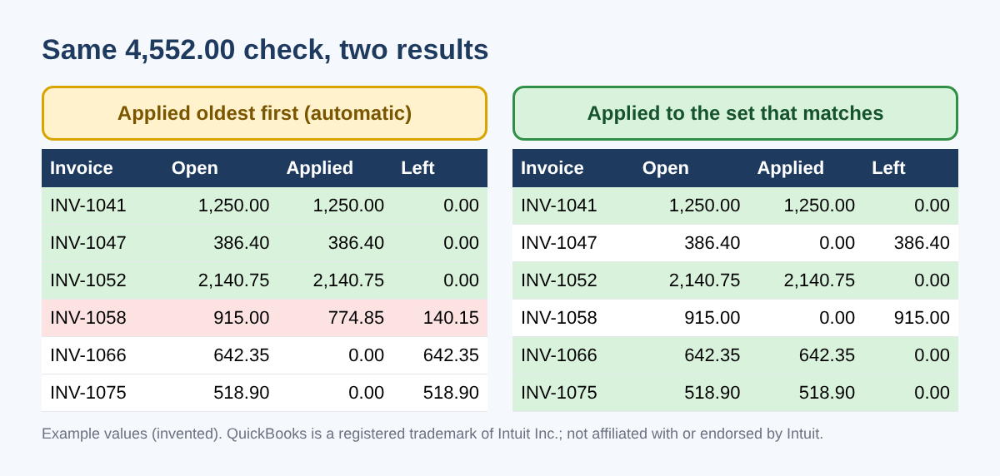
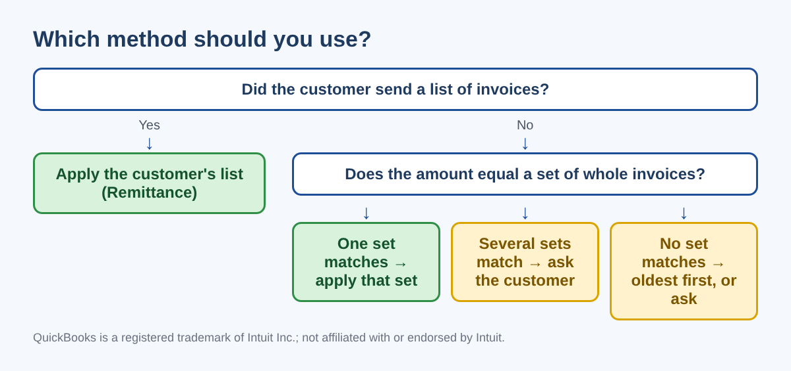
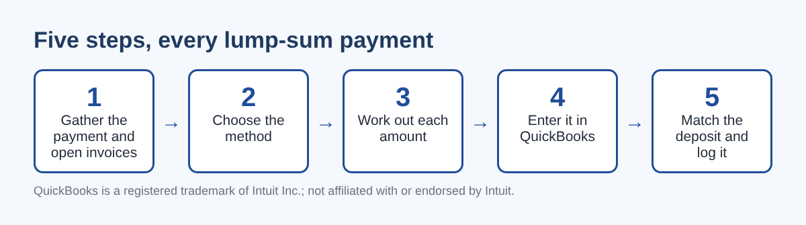

One Customer Payment, Many Invoices: How to Apply It Correctly in QuickBooks
↓ Get the free Excel + PDF kit for this article
A customer mails one check for $4,552.00 and writes nothing on the stub. They have ten open invoices with you. Which ones did they pay? If you guess wrong, your A/R aging shows the wrong invoices as overdue, the next statement confuses the customer, and a "credit" appears that is really a payment for something else. This happens constantly to wholesalers, contractors, agencies and any business that bills the same customer many times a month.
This post walks through a method you can follow by hand in Excel or Google Sheets, and then the exact screens in QuickBooks Desktop and QuickBooks Online.
This is general educational information, not tax, legal or accounting advice; confirm your own situation with a licensed professional.
Why lump-sum payments go wrong
QuickBooks has to decide which invoices a payment belongs to. In QuickBooks Desktop, Intuit's help article explains that when the Automatically apply payments preference is on, the payment is posted to the oldest open invoice first. That is a reasonable default, but customers often pay the invoices they have approved, not the oldest ones. A disputed invoice may be skipped on purpose; a newer invoice may be paid early.
The fix is simple in principle: decide the invoices before you open the Receive Payment screen, then make QuickBooks match your decision.

Step 1 – Gather the facts
- The payment amount, date and reference (check number, ACH trace, wire reference).
- Any remittance details: check stub, email, vendor portal printout, or the memo line on the bank deposit.
- The customer's open invoices: run an open-invoices or A/R aging detail report for that customer and export it to Excel.
Step 2 – Choose the method

| Situation | Method | How to apply it |
|---|---|---|
| Customer sent a list (remittance) | Remittance | Apply each listed amount, capped at the invoice's open balance. Anything extra stays as a customer credit. |
| No list, amount looks like whole invoices | Find the matching set | Test which invoices add up exactly to the payment (Step 3b). |
| No list and no exact set | Oldest first, or ask | Apply by due date; the last invoice may be partly paid. Many businesses ask the customer first. |
Table 1. Choosing a method.
Step 3 – Work out each amount in a spreadsheet
3a. Oldest first (running total)
Put the open invoices in rows 2 onward, sorted by due date, with the open balance in column C. Put the payment amount in cell F1. In D2 type:
=MAX(0, MIN(C2, $F$1 - SUM(D$1:D1)))
Copy it down. Each row takes whatever is left of the payment, up to its own balance. Row 1 is the header, so SUM(D$1:D1) starts at zero. The remaining balance in E2 is =C2-D2. Credit left over: =MAX(0, F1-SUM(D:D)).
3b. Find the set of invoices that adds up to the payment
With n invoices there are 2n − 1 possible sets (10 invoices = 1,023 sets; 12 invoices = 4,095). A spreadsheet can test all of them:
- On a new sheet, put the invoice balances across row 1 (B1, C1, D1 …) and the numbers 1, 2, 4, 8 … (powers of two) across row 2 under them.
- In A4 downward, number the sets 1, 2, 3 … up to 2n − 1.
- In B4 type
=MOD(INT($A4/B$2),2)and copy it across and down. A 1 means "this invoice is in the set". - In the column after the last invoice, total the set:
=SUMPRODUCT(B4:K4,$B$1:$K$1)(adjust K to your last invoice column). - Filter that total column for the payment amount. Each row left is a set of invoices that adds up exactly.
If exactly one row is left, it is very likely the right set, but still compare with the customer's records. If two or more rows are left, the amount alone cannot tell you, so ask the customer which invoices they meant.
| Invoice | Due date | Open balance |
|---|---|---|
| INV-1041 | 2026-09-13 | 1,250.00 |
| INV-1047 | 2026-09-28 | 386.40 |
| INV-1052 | 2026-10-10 | 2,140.75 |
| INV-1058 | 2026-10-24 | 915.00 |
| INV-1063 | 2026-11-02 | 1,478.20 |
| INV-1066 | 2026-11-14 | 642.35 |
| INV-1071 … INV-1082 | Nov–Dec 2026 | 4 more invoices |
Table 2. Example open invoices (invented values; 10 invoices, 11,507.35 total).
| Payment | Method | Result |
|---|---|---|
| 4,552.00 check, no stub | Find the set | 1 of 1,023 sets matches: INV-1041, 1052, 1066, 1075 paid in full |
| 5,000.00 ACH, no details | Oldest first | 1041, 1047, 1052, 1058 paid; 307.85 to INV-1063 (1,170.35 still open) |
| 4,900.00 wire with a list of 4,854.35 | Remittance | Listed amounts applied; 45.65 stays as a customer credit; INV-1078 short by 25.00 |
Table 3. Three payments from the same customer and what each method gives (example values).
A word of caution about "close enough": if you allow a tolerance (for example, to catch a wire fee the customer deducted), more sets start to qualify. In our example, a payment of 4,527.00 with a 30.00 tolerance matches 12 different sets. Keep the tolerance at zero unless you have a reason, and confirm any short payment before you treat the difference as a fee or discount.
Step 4 – Enter it in QuickBooks Desktop
- Go to Customers > Receive Payments.
- In Received From, pick the customer, then enter the amount, date, payment method and reference number.
- In the list of open invoices, untick anything QuickBooks selected for you, then tick only the invoices you decided on.
- Type your amount on each invoice's line. Use Discounts and Credits only if you decided to apply one.
- Select Save & Close. If money is left over, decide with the customer whether it stays as a credit for future invoices or is refunded.
To stop QuickBooks Desktop from picking invoices for you, go to Edit > Preferences > Payments > Company Preferences and, under Receive Payments, untick Automatically apply payments. If a payment is already on the wrong invoice, Intuit's article suggests opening the invoice, using Transaction History to open the payment, then unticking the wrong invoice and ticking the right one.
Step 5 – Enter it in QuickBooks Online
- Select + Create, then Receive payment (menu labels can vary by version).
- Choose the Customer and enter the Amount received.
- Under Outstanding Transactions, tick only the invoices you decided on.
- Type your amount in each PAYMENT box. Per Intuit, any surplus shows as an amount to credit.
- Select Record and close (the label can vary). Then, depending on where you deposited it, record the bank deposit or match it on the Bank transactions page.
A related setting lives at Settings > Account and settings > Advanced > Automation > Automatically apply credits. Intuit explains that when it is on, credits go to the oldest unpaid invoice first, so check it if credits keep landing on the wrong invoices.

Step 6 – Match the bank deposit and keep a log
If QuickBooks Online already posted a bank-feed match to a single invoice, Intuit explains that a posted transaction can be undone from the Posted tab. You can then record the payment against all the right invoices and match the deposit again. QuickBooks Desktop bank-feed screens work differently. Keep a simple log (date, customer, reference, amount, invoices paid, credit left, entered, matched) so short or extra amounts get followed up instead of forgotten.
Common mistakes
- Accepting the invoices QuickBooks pre-selected without checking them.
- Recording the deposit straight to income in the bank feed, which leaves the invoices open and overstates sales.
- Writing off a short payment before asking why it is short.
- Treating extra money as income when it is really a customer credit or a deposit for future work.
- Changing payments in a period that is already closed or reported; talk to your accountant first.
FAQ
Can I split one payment across two customers?
Generally, each Receive Payment entry belongs to one customer. If a parent company pays for several locations set up as separate customers or jobs, many bookkeepers record one payment per customer and group them into one deposit. Check how your file is set up before deciding.
What if no set of invoices matches the payment?
Look for a deducted fee, an early-payment discount, a credit the customer applied on their side, or an invoice from another customer. If you still cannot explain it, apply oldest first or hold it as a credit and ask the customer.
Is oldest first wrong?
No. It is a common default when the customer gives no details. The problem is only when it contradicts what the customer actually paid.
How many invoices can I test with the spreadsheet method?
The number of sets doubles with each invoice, so 12 to 15 invoices is a practical limit for ordinary formulas. Start with the invoices the amount could plausibly cover.
Checklist
- ☐ Payment amount and reference written down
- ☐ Customer's open invoices exported
- ☐ Method chosen (list, matching set, or oldest first)
- ☐ Several matching sets? Customer asked
- ☐ Only the chosen invoices ticked in QuickBooks; amounts typed
- ☐ Applied total + credit = payment
- ☐ Deposit matched in the bank feed and payment logged
You can download the ready-made Customer Payment Allocator 2026 for free in the Free kit download box below (Excel + PDF guide, no sign-up).
Disclaimer. This article is general educational information about recording customer payments. It is not tax, legal or accounting advice and does not guarantee any result. Accounting treatment can differ by business, so confirm your own situation with a licensed professional. Menu names in QuickBooks can change; they were checked against Intuit's help articles on 2026-11-24. QuickBooks is a registered trademark of Intuit Inc.; not affiliated with or endorsed by Intuit.
Free kit download
Tools to follow this article step by step. No sign-up needed.
- Excel workbook (.xlsx)Customer_Payment_Allocator_2026_EN.xlsx · 432 KB
- Step-by-step guide (PDF)Customer_Payment_Allocator_Guide_2026_EN.pdf · 75 KB
Free to use for yourself and your own business; please do not resell or redistribute. General information, not tax, legal or accounting advice; check every figure against your own records. QuickBooks is a trademark of Intuit Inc.; BIZLEX is not affiliated with Intuit.
Sources
- Intuit – Record invoice payments (QuickBooks Online) – 확인일 2026-11-24
- Intuit – Record an invoice payment in QuickBooks Desktop – 확인일 2026-11-24
- Intuit – Resolve common issues when applying a payment towards an invoice (Desktop) – 확인일 2026-11-24
- Intuit – Create and apply credit memos or delayed credits in QuickBooks Online – 확인일 2026-11-24
- Intuit – Match your bank and credit card transactions (QuickBooks Online) – 확인일 2026-11-24